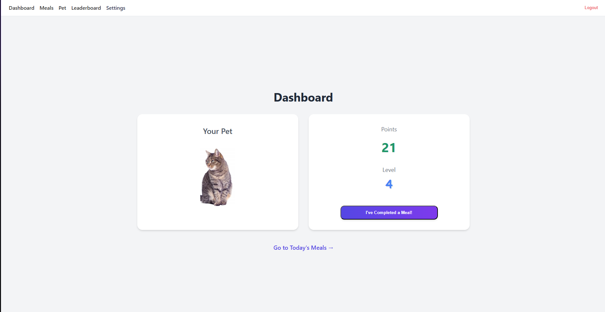

Hi, I'm David.
A Full Stack Engineer.
I build scalable, secure, and user-centric web applications. With a strong foundation in computer science and hands-on experience in React, Node.js, and cloud deployment, I turn complex problems into real-world solutions.
About Me
Hello! I'm a full-stack engineer driven by a passion for building things that are both useful and user-friendly. My journey started in Computer Science at the University of Bath, which gave me a strong theoretical foundation and a love for complex problem-solving.
Today, I channel that passion into creating scalable, secure, and efficient web applications. I thrive on the full-stack challenge: architecting a robust Node.js API, containerizing it with Docker, and deploying it to the cloud is just as exciting to me as crafting a responsive and resilient React frontend.
I'm currently seeking a full-stack role where I can contribute to a meaningful product, collaborate with a talented team, and continue to learn and grow as an engineer.
My Tech Stack
Frontend
- ›JavaScript & TypeScript
- ›HTML5 & CSS3
- ›React
- ›Next.js
- ›Tailwind CSS
Backend
- ›Node.js
- ›Express.js
- ›Python
- ›SQL (PostgreSQL, SQLite)
- ›Prisma (ORM)
- ›Redis (Caching)
- ›JWT & bcrypt (Auth)
DevOps & ML
- ›Docker
- ›Git & GitHub
- ›AWS
- ›GCP (Google Cloud)
- ›Vercel & Hugging Face
- ›PyTorch
- ›Scikit-learn & Pandas
- ›SpaCy & NLTK
Things I've Built
Gamified Nutrition Application
React | Node.js | Express | PostgreSQL | Redis | Docker | GCP | AWS
I built this full-stack application to test a hypothesis: could gamification make it easier for people to build healthy eating habits? The goal was to create an engaging platform where users are rewarded for tracking their meals.
The app was a success, and I was able to measure an 83% rate of increase in user self-efficacy after consistent use.
To build it, I used a monorepo structure (pnpm + Turbo) to manage the React frontend and Node.js backend. This setup allowed me to efficiently develop and manage dependencies for the entire stack.
The backend is a security-first RESTful API built on Node.js and Express.
- Authentication: Implemented a stateless auth system using JSON Web Tokens (JWT). Passwords are never stored in plain text, only as hashes using bcrypt.
- Security: Hardened the API with Helmet to set secure HTTP headers and express-rate-limit to protect all endpoints from brute-force/DoS attacks.
- Database & Performance: Used PostgreSQL as the primary database and Redis for caching frequently accessed data, like the global leaderboard.
- Reliability: To prevent data corruption from simultaneous requests (a race condition), I refactored complex logic like point-and-level updates into single, atomic PostgreSQL queries. I also wrote a full suite of integration tests with Vitest and Supertest.
The frontend is a responsive and resilient single-page application (SPA) built with React.
- Routing: Used React Router for all client-side navigation, including a `ProtectedRoute` component to ensure only logged-in users can access the main application.
- API Client: Centralized all API logic into a single Axios instance. This instance uses an interceptor to automatically attach the user's JWT to every outgoing request, keeping auth logic separate from the UI.
- Resilience: The entire app is wrapped in an Error Boundary component, which prevents a JavaScript error in one part of the UI from crashing the whole application for the user.
- UI: The dashboard, pet display, and progress bars all work together to give users instant visual feedback on their progress and level-ups.
I designed the application to be fully containerized and cloud-agnostic, and I deployed it to both AWS and GCP.
- Containerization: Wrote a multi-stage Dockerfile that builds the app and then copies only the production-ready files into a minimal, secure image. This reduces the image size, attack surface, and deployment time.
- AWS Deployment: Deployed to Elastic Beanstalk, using `pm2` as a production process manager to ensure the Node.js server would automatically restart if it ever failed.
- GCP Deployment: Architected the infrastructure for network security by placing the PostgreSQL database in a private VPC. This makes the database completely inaccessible from the public internet, allowing only the application server (within the same VPC) to connect.
Recipe Designer
Next.js | TypeScript | Prisma | PostgreSQL | NextAuth
This was a fast-paced project to build a full-stack recipe creation tool. I used Next.js for its hybrid static & server-side rendering, which allowed me to build a dynamic frontend and secure API routes in one place.
- The Prisma ORM made database interactions with PostgreSQL incredibly intuitive and type-safe.
- For authentication, I integrated NextAuth to handle secure user sign-up and login, including password hashing with bcrypt to protect user data.
- The main feature was a dynamic recipe builder that updated the total cost and calorie counts in real-time as a user added ingredients.

Celeste Reinforcement Learning Agent
Python | PyTorch
As part of an academic group project, my team aimed to solve a complex gaming environment (the platformer Celeste) using deep reinforcement learning.
My role involved implementing a Proximal Policy Optimization (PPO) algorithm from scratch and engineering the agent's architecture and reward function. We successfully developed an agent capable of autonomous gameplay, which was a fascinating dive into the practical challenges of applied ML.
Movie Review Sentiment Analysis
Python | Scikit-learn | SpaCy | NLTK | Docker
This project was a deep dive into natural language processing (NLP). The goal was to build a model that could accurately classify movie reviews as positive or negative.
- I engineered a complete data pre-processing pipeline using SpaCy and NLTK for tokenisation.
- I then experimented with different feature extraction methods, like TF-IDF vectorization, and tested four different classification models, ultimately achieving 87% accuracy on the test set.
- The entire pipeline was containerized using Docker to ensure it could be run reliably in any environment.
Get In Touch
I'm currently looking for full-stack engineering roles. If you're looking for a developer who is passionate about building secure, scalable, and user-friendly applications, I'd love to hear from you.